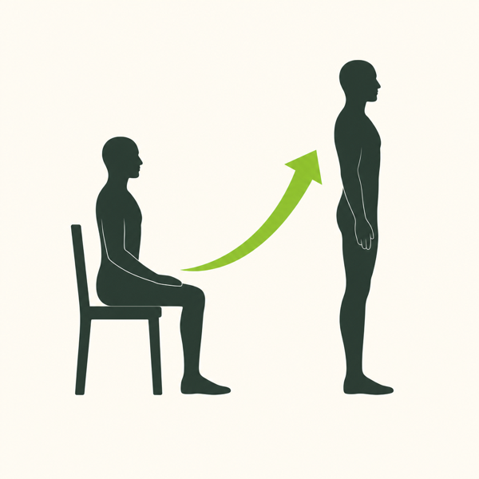
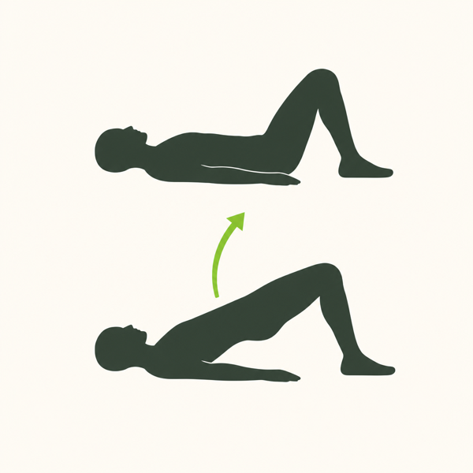
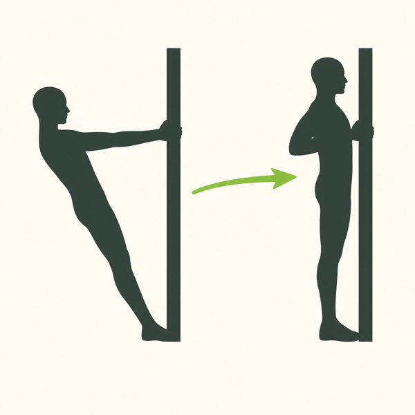
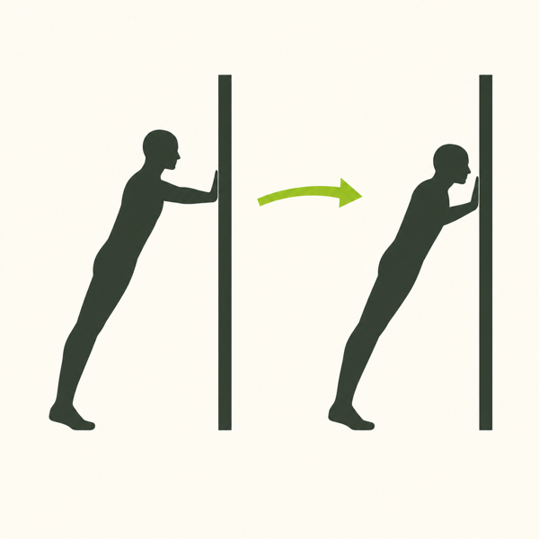
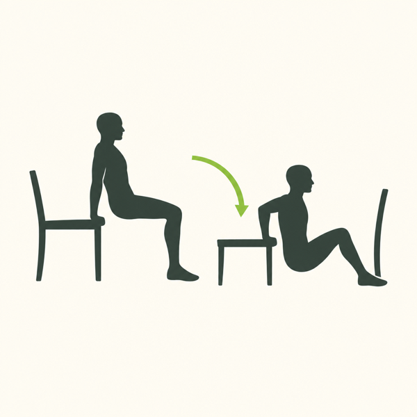
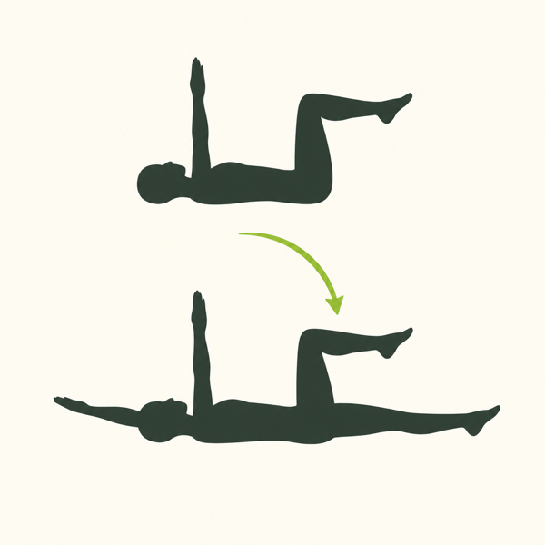

Vital · a 30 day reset
Two workouts, one short list of food, nothing to plan.
Before you begin
You did not come here for another meal plan. You came here because deciding what to eat has become one more thing to think about, and you do not have much thinking left over.
So this guide takes things away instead of adding them.
There are two workouts. You alternate them. There is one short list of food, and at every meal you pick between two options per group. No recipes, no macros to count, no app, no weighing anything.
Give it about 30 days. Long enough to build a default you can come back to and to get your body used to moving again. Short enough that you finish it. After that, adding things back is a choice rather than a scramble.
Start where you are, not where you think you should be. Ten pushups is a fine goal. Five is fine. Against a wall is fine. People who are already training are not the ones starting a GLP-1, so this guide assumes you are beginning, and every movement in it has a smaller version printed right next to it.
One promise about what this is not: it is not a plan to lose more weight faster. The medication is handling that. This is about getting through the next month feeling decent, eating enough protein to hold onto the muscle you have, and coming out the other side with your head clear.
Part one
Two choices per group. That is all you ever decide.
A plan tells you what to eat on Tuesday. A pool just gives you a short menu and lets you pick. Pools survive real life; plans do not survive the first bad day.
Nothing here is a recipe. Nothing needs more than four ingredients or a pan and five minutes. Every plate leads with protein, because protein is the part that protects your muscle while you are eating less, and it is the part almost everyone on a GLP-1 comes up short on.
THE WHOLE LIST
That is around fifteen things, most of them shelf stable or frozen. Screenshot this page and shop off it. If something on the list is not for you, swap it for the nearest equivalent and keep the list the same length. The length is the point.
If you want the numbers
You do not need this page. Build the plates above and you land close enough on your own, which is the whole point of the pools. But plenty of people on a GLP-1 do want to see the arithmetic, usually because they are worried about muscle and want proof they are eating enough. So here it is, and it starts with protein rather than calories on purpose.
Protein is the floor you set first, because it is the number that protects your muscle and it is the one almost everyone on this medication misses. Everything else is built around it.
That is 0.7 g per pound of goal weight. A palm-sized piece of meat, fish or a thick Greek yogurt is roughly 25 to 30 g, so you can hit the floor by counting palms and never open an app.
Then, if you want a calorie target, you build it out from that protein number rather than starting from a calorie goal and hoping the protein fits inside it.
Part two
Two days. You alternate them and never plan again.
Fifteen minutes, three moves, twice through. Then a walk. That is the whole workout, and the walk matters as much as the workout does.
Every move has three versions. Start is where most people beginning a GLP-1 should actually begin. Move up only when the current version stops feeling like work, and there is no schedule for that. Doing the easy version for the whole 30 days still counts as doing it.

Sit to stand

Glute bridge

Doorway row

Pushup

Chair dip

Dead bug
THE WALK
5,000 to 10,000 steps a day
Every day, both days, and on the days you do nothing else. Walking is the part that keeps your appetite honest, your digestion moving, and your energy from flattening out. It does not need to be one walk. Three ten minute ones do the same job.
Part three
Most GLP-1 stomach trouble is about timing. When you eat matters more than what.
None of this is medical advice and none of it replaces what your prescriber tells you. It is what tends to help, collected in one place.
Bonus
Nobody tells you the shape of it, so here it is.
The shopping is the hardest part. Once the food is in the house the decisions stop. Expect to feel like you are eating too little. Check your protein number before you worry.
The first bad day usually lands in here. This is what the floor version is for. Do one round, take the walk, move on. Do not restart, do not make up for it.
The workouts stop feeling like an event. Most people move at least one movement up to the next version somewhere in this week. Some do not, and that is fine.
The food goes genuinely boring. That is the system working. This is also where people notice they have stopped thinking about food outside of mealtimes.
Strength shows up before size does. Easier stairs, easier grocery bags, standing up without pushing off. That is the muscle you were worried about losing.
Losing weight quickly means losing some muscle along with the fat. That is true of any fast weight loss and it is not unique to these medications. What changes the ratio is two things: getting enough protein, and giving your muscles a reason to stick around.
The guide is built around those two things. Every plate leads with protein. Every workout asks your muscles to do something. Fifteen minutes twice a week alternating is not an impressive training program, and it is not trying to be. It is the minimum that sends the signal.
If you do nothing else in this guide, do those two things.
The one product in this guide
Some days you will not want to eat. That is the medication doing its job, not you failing at yours, and pushing food you do not want is how people end up nauseous and then end up skipping protein altogether.
Nourish+ is the answer to that day. It takes the meal off you entirely, with the protein your muscle needs and nothing to prepare or decide. Keep it in the house before you need it, because the day you need it is not the day you will feel like ordering it.
Get Nourish+You do not graduate from this and you do not have to keep doing it.
What you should have at the end is a default. A short list you know works, two workouts you can do without looking anything up, and a walk that has become automatic. Add things back one at a time, keep what earns its place, and come back to the plain version whenever food starts feeling loud again.
That is what a reset is for. Not forever. Just long enough to get quiet.
A note on this guide
This guide is general wellness information, not medical advice, and it is not a substitute for the guidance of the clinician who prescribed your medication. Talk to your prescriber before changing how you eat or starting to exercise, especially if you have any existing condition or your symptoms are severe or persistent. Nothing here is intended to diagnose, treat, cure or prevent any disease.